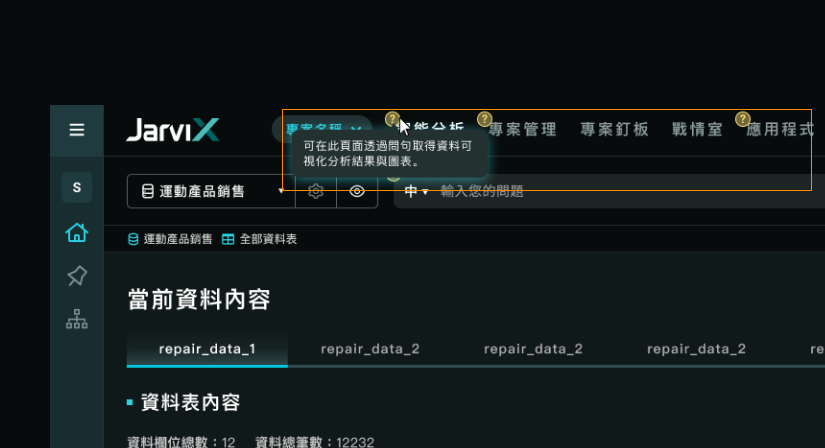
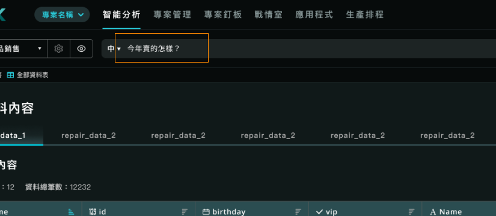
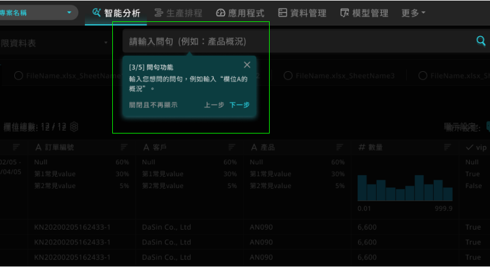

2. 降低新使用者的使用門檻
// Before
Ａ）初次進入使用時，第一個畫面呈現的資訊非常滿，一堆沒有次序性的純說明標記，使用者無法馬上了解功能之間的關係，以及要先用什麼功能。
- 對於之前習慣Excel 操作模式的使用者，比較無法馬上聯想和如何開始操作。

(舊版UI)
(舊版，分類說明)
Ｂ）不了解系統能辨識的詞句語法，問句錯誤失敗率極高。
- 沒有特別說明系統能夠辨識語法的規則與邏輯，且不了解可使用詞彙有哪些，導致使用者所輸入的問句都為錯誤居多（ex.今年賣的怎樣？）。
- 「問句說明」功能雖然一開始的引導說明有標記，但由於不明顯因此使用率極低。

(舊版UI)
// After
Ａ）列出各種需要引導的情況並分類，依不同階段的使用者情況，提供不同方式的功能引導。
(盤點需要引導的情況並分類)
 (新版，分類說明)
(新版，分類說明)
- 初次使用的起始畫面，引導使用者去其他功能進行資料前置設定。
(新版UI，沒有任何資料表可以使用)
- 該功能初次使用時，提供步驟性的引導說明，讓使用者可以更專注了解目前所在功能的內容。

(新版UI，功能初次使用)
Ｂ）優化問句功能的各樣提示，讓使用者一開始就有些額外資訊可以做參考。
- 在輸入框元件就顯示一些基礎問句推薦(tooltip顯示)選項，供使用者理解問句語法邏輯。
(新版UI，Placeholder 文字)
- 在輸入文字的同時，也即時辨識使用者輸入的文字是否有對應到什麼，並給予推薦，且主動推薦給使用者可使用的問句功能名稱，例如：產品數量趨勢。
 (新版UI，問句功能推薦)
(新版UI，問句功能推薦)